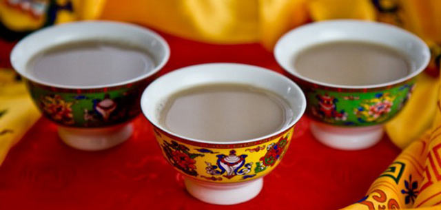
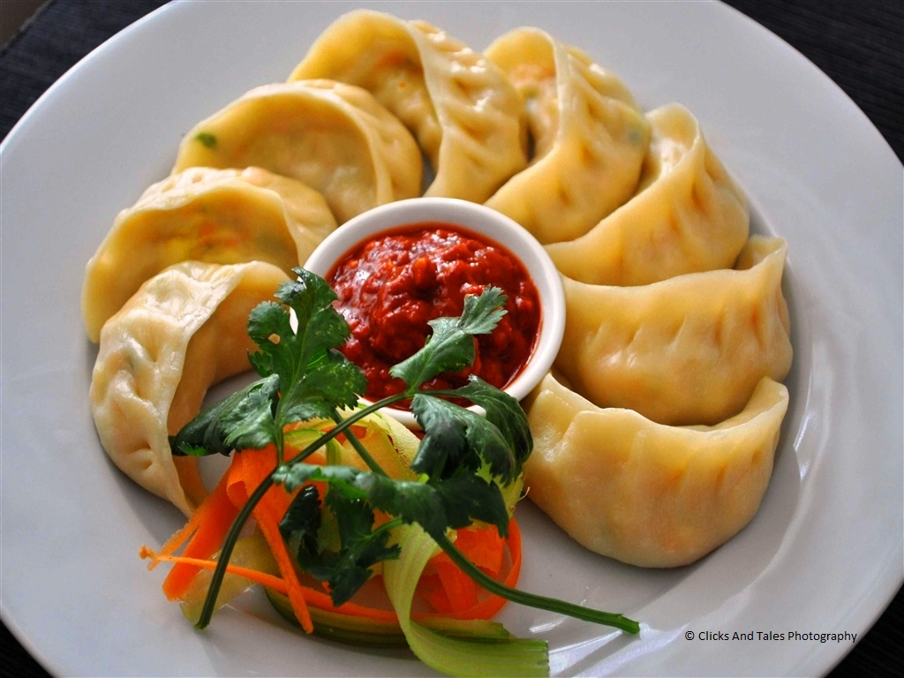
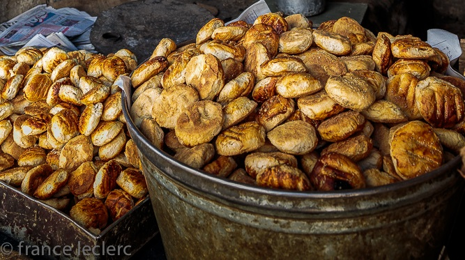

Local Cuisine
Leh is a multicuisine city serving Indian, Tibetan, Chinese and even Korean. The cuisine here exhibits tints of these foreign influences. Visitors must try out the local dishes which almost define the cuisine here such as Thukpa, noodle soup;Tsampa, known in Ladakhi as Ngamphe (roasted barley flour), and Skyu which is a heavy pasta dish with plenty of veggies as well as the very popular and delicious Momos which are steamed dumplings stuffed with vegetables or meat.
Drinks include Tea, coffee, beer and Chang which is an alcoholic beverage drunk especially on festive occasions.
10 FOOD ITEMS TO DEFINITELY TRY IN LEH-LADAKH
There is much more to explore in terms of food in Leh than the quintessential instant noodles. Blogger Purba Mazumdar puts together some very interesting items that you should definitely try during your trip to Leh.
1) Cheese from Yak’s milk (Chhupri): While traveling to parts of Ladakh, you will come across Yaks, you will click pictures and probably take rides on them. But have you ever thought of trying cheese made of Yak milk? Weird? Well, probably for some people, but when in Leh please do not miss on trying out “Chhupri”. Locals do not understand it when you say Yak cheese, they understand the local term for it “Chhupri”.

Chhupri is easily available in the main market area, where vendors even sell it on the roadside street shops. They are available in three flavors: Sweet, salty and plain. The cheese is pretty hard and looks like calcium deposits. It is difficult to bite down on bigger pieces of the cheese, so better buy a pack of smaller pieces.
2) Tigmo (pronounced Teemo): We did not go looking for this dish, unlike the Chhupri. We just went into a local restaurant in Leh main market, asked for a local dish and were offered the “Tigmo”. It is a form of fermented and steamed bread, served with a veg/non-veg stew.

The bread itself is very soft and fluffy and goes very well with the lightly flavoured stew. Although we went in for a snack, repeat orders of the delicious Tigmo converted it to a full dinner.
3) Butter Tea: Since the day we started planning a trip to Leh, I had decided on trying Butter Tea in Leh. But on reaching Leh, I couldn’t find it anywhere! I tried hard till the last day but had to give up. Then the last night our hotel owner told us he was serving us special home-made tea and I realised that it was the butter tea I was so desperately looking for.

Our host then explained to us that this tea is generally made at home and not served in restaurants. The tea looks pink and tastes salty. He explained why the tea is made with butter and salt. The butter helps keep lips from getting chapped in the harsh cold weather and the salt helps to stay away from altitude sickness.
He also showed us the special wooden apparatus that is used to churn butter for the tea and is available in all Leh homes.
4) Momo: It is a crime to not taste momos while you are in Leh. The momos are available in various shapes, one of which according to our driver is shaped like a rat.

5) Thukpa: It is a Tibetan soup. Due to the Tibetan influence in Leh, Thukpa is quite popular in Leh. It is a clear soup with lots of vegetables. Comfort food for cold temperatures of Leh.
6) Thenktuk: This a version of the Thukpa. In addition to the vegetables this soup consists of noodles as well. In cold temperatures, you would love to gorge on hot soups and this variation is quite good.
.jpg)
7) Mokthuk: Looking for some momo as well as soup? Mokthuk is for you. It is a Tibetan soup consisting of momos and vegetables. The goodness of momos and warm soup covered in one.
8) Qahwa: Although we hear of Qahwa more in the Kashmir region, it is in fact, an essential drink in Leh. The day we landed in Leh, we were asked by our host to drink Qahwa throughout the day in small quantities. It contains saffron and cinnamon that help keep the body warm. If you are planning to buy Qahwa to take back home, the local grocery shops stock only two brands: King’s and Kanwal. These are ready to make Qahwa powder brands.
9) Kulcha: This is a kind of bun, which is very unlike what we know as Kulcha in North India. It is a hard bun that the locals eat with qahwa or tea.

10) Langar: The langar served at Gurudwara Pathar Sahib is food for the soul. I have never had such tasty rajma in my life. The most amazing thing is that the Gurudwara cooks in such huge volumes and still manages to keep it so homely. We saw numerous army trucks lined up outside the Gurudwara and army men kept pouring in during lunch hour. It looked as if they routinely came here for lunch.